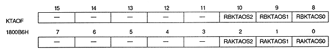

Coefficient table address offset bit : Coefficient table address offset bit
| RAKTAOS2 to RAKTAOS0 | 1800B6H | bits 2 to 0 | rotation For parameter A |
| RBKTAOS2 to RBKTAOS0 | 1800B6H | Bits 10 to 8 | For rotation parameter B |
These bits are added to the upper part of the coefficient table start address (KAst) read from the rotation parameter table.
The actual start address of the coefficient table varies depending on the size of the coefficient data, and is calculated using the following formula. When the VRAM capacity is 4M bits, the most significant bit of the address is ignored.
When the coefficient data size is 2 words (Coefficient table start address) * = (Coefficient table address offset register value lower 2 bits) X 40000H ＋+ (KAst integer part 16 bits) × 4H
When the coefficient data size is 1 word (Coefficient table start address) * = (Coefficient table address offset register value 3 bits) X 20000H ＋+ (KAst integer part 16 bits) × 2H